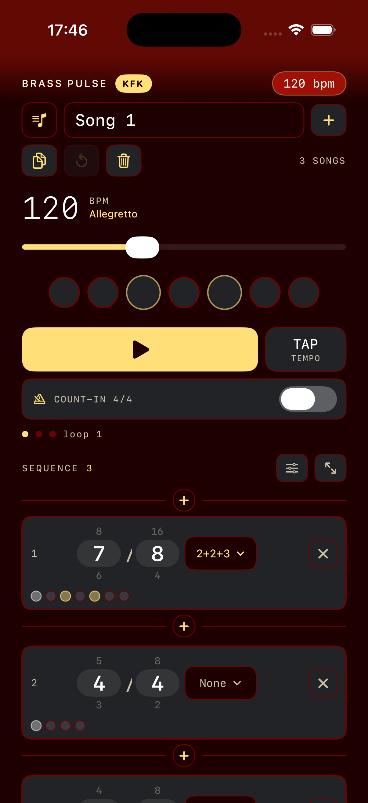
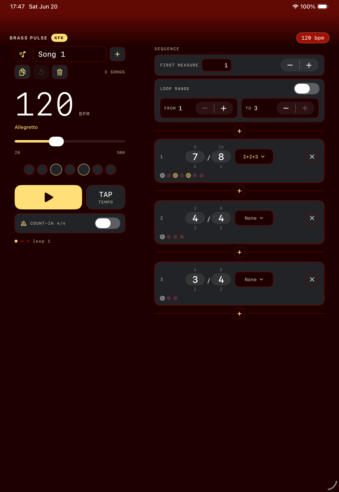

Build irregular forms
Create a sequence of measures with different time signatures, display real rehearsal measure numbers, and add beat groupings such as 2+2+3 in 7/8.
A practical guide to using the iOS metronome for irregular measures, changing time signatures, custom beat groupings, loops, count-ins, and rehearsal-ready song libraries.
Create a sequence of measures with different time signatures, display real rehearsal measure numbers, and add beat groupings such as 2+2+3 in 7/8.
Start from any measure, add an optional 4/4 count-in, loop a selected range, and follow the highlighted measure as playback advances.
Songs, tempo, first measure number, loop range, count-in preference, and measure sequences are saved locally on your device.
| Start practicing | Tap the play button. To begin elsewhere, tap the measure card where you want playback to start. |
|---|---|
| Change tempo | Move the BPM slider, or tap the TAP TEMPO button several times at the desired pulse. |
| Add a count-in | Turn on count-in 4/4. Playback starts with four count-in beats before the selected measure. |
| Edit a measure | Drag up or down on the numerator or denominator wheel, then choose a grouping preset if needed. |
| Loop a passage | Enable loop range, set the from and to measure numbers, then press play. |
These screenshots show the app on compact and wide layouts.


Tap the song list button, then choose a song from the list. The checked row is the current song. Locked rows are built-in songs.
Use + for a fresh song. Use duplicate to make an editable copy of the current song, which is the easiest way to adapt a built-in sequence for rehearsal.
Editable songs can be renamed directly in the song name field. Built-in songs can be reset to their original content. Delete removes the current song when at least one other song remains.
Built-in songs protect their composition edits. You can still change tempo, count-in, and loop settings. To edit measures permanently, duplicate the song. You can also long-press an edit control to temporarily unlock a built-in song for a short adjustment window.
A grouping is valid only when its parts add up to the numerator. If you change a time signature and the old grouping no longer fits, the app clears that grouping.
Turn on loop range. The selected cards gain a subtle left marker, with repeat icons at the start and end boundaries.
Use from and to steppers. The start cannot move past the end, and the end cannot move before the start.
Playback wraps inside the inclusive range. The loop count indicator increments as the passage repeats.
Changing the count-in or loop range during playback restarts playback at the active loop start so you hear the newly selected practice range predictably.
Use the sequence settings button to show or hide first-measure and loop controls. Use the focus button to hide the larger transport and show more measure cards.
The app switches to a split layout with transport controls on the left and the editable sequence on the right.
Buttons and editors include accessibility labels. Time signature wheels support adjustable actions for increment and decrement.
You are probably viewing a locked built-in song. Duplicate it for an editable copy, or long-press the specific edit control for a temporary unlock.
Tempo, measure, and grouping edits stop the current run intentionally so the next playback begins with a clean schedule.
The tap tempo readout resets after a short pause. Tap again at least twice to calculate a new BPM.
Brass Pulse KFK is developed by Pieter Lambers. For questions, issues, or release notes, use the GitHub repository: irregular-measure-metronome.
The app does not collect personal data. Read the privacy policy for the full statement.